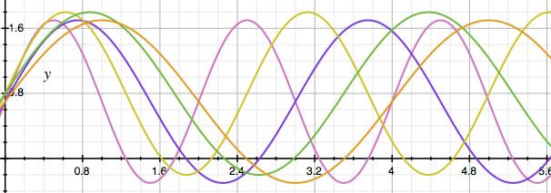

Behind the Eyes
There are five creatures that look out of the Eyes. Each has its own personality and rhythms. They have been there as long as the tree has held them inside. They have been watching you from the site. Now, by interacting with the Eyes you can tell the creatures how you feel and they converse with you at last, causing you to see yourself through a new lens.
The creatures wake and sleep at regular intervals based on their personality. So while you might not see a particular creature when you're viewing the eyes, rest assurred they will wake up after a few minutes of rest.
The wake/sleep cycles of all of the creatures
Creatures
The Baby

Babies are naturally curious and like to play. This baby is no different. If it’s not napping, it might even play peek-a-boo with you. Will this baby be sweet or cranky? Will it laugh or cry? Talk and play with the baby to find out how it’s feeling today, and see if how you feel changes the way it acts.
The Flirt

The Flirt sends you beautiful winks, showing you how pretty it is. Will you fall for the Flirt? Just remember, when she falls for you, you will only be a fleeting fancy. The Flirt is very fickle. She might return very quickly or might run away forever. Every once and awhile, the Flirt might fall madly in love with someone. If this is you and you leave the flirt heartbroken, she'll retreat depressed until there's someone special again who catches her eye.
The Grannie

The Grannie knows that not much else matters but love. She focused on you because you are so special. The Grannie sends you a hug when she sees you and whenever you are down. She sees how you are connected to the big picture. She has the wisdom to know that as an individual your actions effect the world. Grannie knows that with a special smile in you heart, the little things that trifle you will fade away. What do you have to share with your Grannie?
The Grump

Watch out for the grump that lives in the tree. You may see his eyes darting back and forth occasionally. He is sneaky and suspicious of why you have come to what he considers is his personal park. He likes to be alone. He is sensitive. He doesn’t agree with anyone. He wants you to go away so he can go back to sleep. Will you provoke the grump or will he hurt your feelings? After his fit he is so tired, he'll probably fall back asleep. But you will want to keep interacting because his eyes are so crazy to watch.
The Raver

The Raver is an awesome, fearless, youthful soul. Engaging with the Raver is like playing with a puppy. He’s fun, bouncy, quick, happy, impulsive, energetic and dramatic. And he wants everyone to unite and party, party, party! The Raver takes risks. He dares you to play so long that you’ll stay up late, sleep in and repeat it all over again the next day. Will you go along where the Raver takes you?
Technology
The eyes are comprised of over 3,000 LEDs and hundreds of feet of wiring. It is controlled by a small Linux-based computer called a Raspberry Pi and FadeCandy LED controller boards.
Three custom pieces of software were developed to run this project:
- iEye - Eye pattern and animation creation tool
- Brainstem - Creature simulation and animation control server
- Cortex - Interactivity and monitoring server
Construction
Each eye is made of aluminum plate that was drilled, shaped, and TIG welded. To shade each LED cluster there 63 aluminum tubes attached, using a specialized adhesive, to the front of each eye. The eyes are hung from the support structure using high strength monofilament fishing line.
The steel support structure was custom designed and fabricated for this installation.